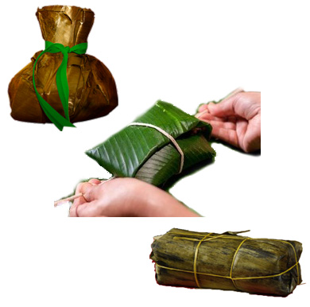

Assembling and Cooking the Tamales
- The Bed of Leaves1
-
The Banana Leaves
Wash the banana leaves under warm water.
Let the leaves rest on hot water in a large pot for one minute.
Remove the leaves from the water when they are tender and easy to bend without cracking.
Select one large banana leaf as the base of each tamale.
Place two more banana leaves over the based leaf, one above the other.
The leaves should be pointing in the opposite direction, like forming a cross. - Adding Ingredients2
-
The Dough
Place a 1/2 of cup of dough in the center of the bed of leaves and spread it out.
-
Adding Meats and Others Ingredients
Over the dough put one piece of beef,
a slice of carrot,
a chunk of potato,
a portion of pork,
another slice of carrot,
another chunk of potato,
one chicken drumette,
and one portion of egg.
Top it with another 1/2 of dough.
This does not have to be uniform! - Closing3
-

Closing the Tamales
There are different ways to close the tamale.
You can choose how to arrange the leaves
so the presentation of your final tamale will change.
To form a rounded tamale:
Pull up the leaves creating a spherical shape
and then tie the top with the kitchen string.
To form a Rectangular tamale:
Wrap the four ends of the leaves to form a packet
and then tie it around with the kitchen string.
Do not let any of the filling seep out.
If the leaves break just reinforce with extra banana leaves. - Cooking4
-

Cooking the Tamales
Use a large pot with steamer basket so the tamales do not touch the water in the bottom.
Stack the tamales all the way to the top in the steamer pot.
Add water to cover almost all the tamales.
Cover the pot and bring it to a boil.
Lower the heat and simmer about 3 hours.
Keep checking the water level.
You probably will have to replenish the water during the cooking process.